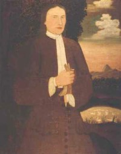

by
Stefan Bielinski
Leendert Gansevoort was born in September 1683. He was the only surviving son of New Netherland pioneers Harme Harmanse and Maria Conyn Gansevoort.
In May 1712, he married Albany native Catharina De Wandelaer at the Albany Dutch church. By 1730, their eight children were baptized there and both parents served as frequent baptism sponsors.
Leendert followed his father in the brewing business. He also prospered to the point where he was elected alderman for the third ward from 1734 to 1739. His brewery behind the family property on the east side of Market Street was an Albany landmark for much of the eighteenth century. On a number of occasions, he delivered beer for the city government.
This prosperous and politically active brewer was always counted among the city's qualified voters. His status was further documented and memorialized in a set of portraits done about 1720. No other Albany brewer was so favored!
In 1741, he was among the worthies favored with a share in the Sacandaga Patent.
Leendert Gansevoort filed a will in September 1762 - leaving an extensive estate to his wife during her widowhood and then to his two sons and the children of his sister. He died in December 1762 months short of his eightieth birthday. In 1763, his name still appeared on an Albany freeholders list. Leendert's will passed probate that August.
notes
 Sources: The life of Leendert Gansevoort is CAP biography number 4656. This profile is derived chiefly from family and community-based resources.
Sources: The life of Leendert Gansevoort is CAP biography number 4656. This profile is derived chiefly from family and community-based resources.
Copy of a portrait by Nehemiah Partridge done about 1718. Collection of the New York State Historical Association in Cooperstown. A matching portrait of Catharina resides in the same collection.
Between 1704 and 1753, Leendert witnessed twenty-three baptisms at the Albany Dutch church.
first posted 7/25/03; last revised 11/25/17